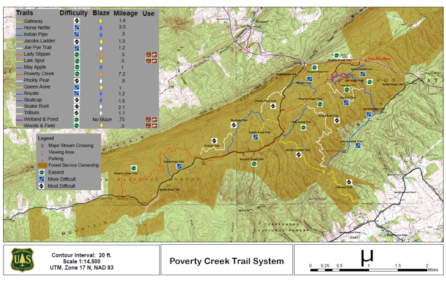

|
Runs most often take place at Pandapas Pond trail system on Mondays and Wednesdays at 6:00PM, with occasional visits to other nearby trails. Carpool rides leave the Pylons at 5:45PM. An email will be sent to those on the listserve on the day of a run. |
|
|  | |